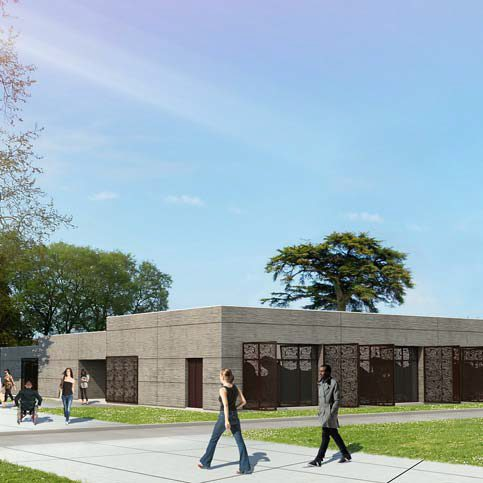

MDQB · Évaluation · Ven. 18/12 · 3 h · Sommative
S5Rendu du dossier PRO
« Le dossier est-il prêt à être transmis aux entreprises ? »
L'architecte attend les plans de second œuvre pour le dossier PRO. Vous produisez les plans, les exports et un détail.

Déroulé
-
75 min
A · Plans du dossier PRO
- Plan plâtrerie n°5 : cloisonnement coté, légende des types de cloisons et doublages.
- Plan plafond n°6 : repérage couleur des types de faux plafond et des HSFP, légende.
- Vue 3D plongeante du second œuvre.
-
45 min
B · Mise en page et exports
- Feuilles A3 avec cartouche complété, échelles adaptées.
- Exports PDF, IFC et RVT au bon nom dans 03_Livrables/S5_Rendu.
-
60 min
C · Détail à main levée
Au 1/5, sur papier : jonction entre une cloison coupe-feu et le faux plafond. Désignez tous les matériaux et cotez les couches.
Grille d'évaluation
| Compétence | Critère | Points |
|---|---|---|
| C2.3 | Types de parois et de plafonds conformes au CCTP | 2 |
| C2.3 | Choix coupe-feu et acoustiques cohérents avec les locaux | 2 |
| C2.3 | Incohérences du dossier relevées, solution proposée | 2 |
| C3.4 | Maquette du second œuvre complète et juste | 4 |
| C3.4 | Pièces nommées, surfaces conformes | 2 |
| C3.4 | Plan plâtrerie n°5 coté et légendé | 2 |
| C3.4 | Plan plafond n°6 repéré et légendé | 2 |
| C3.4 | Mise en page, cartouche, exports nommés | 2 |
| C3.4 | Détail à main levée au 1/5 | 2 |
| Total | 20 |